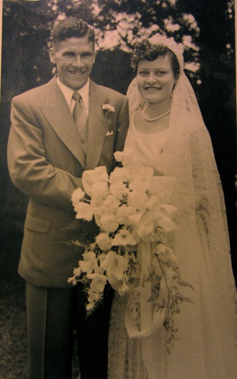

JAMES ALEXANDER HOWDEN
Born:09-SEP-1928
in Durban, South Africa
Died:08-DEC-2008
In American Fork, Utah, USA
Occ:Electrical Engineer
Married:06-FEB-1954
at St Luke's Church,
High Road, Orchards, Johannesburg
Bride's Address: 1 Essex Street
Kensington, Johannesburg
AUDREY CYNTHIA STEVENS TRUTER
Born:09-OCT-1932
Middelburg, Cape Province, South Africa
Died:13-FEB-2013
In American Fork, Utah, USA
Children:
Patricia(Married Lee Stokes)(c1955)
Atholl(c1957)
Matthew(C1959)
Timothy
Christopher(1967)
Sharon
[ Howden Home ]